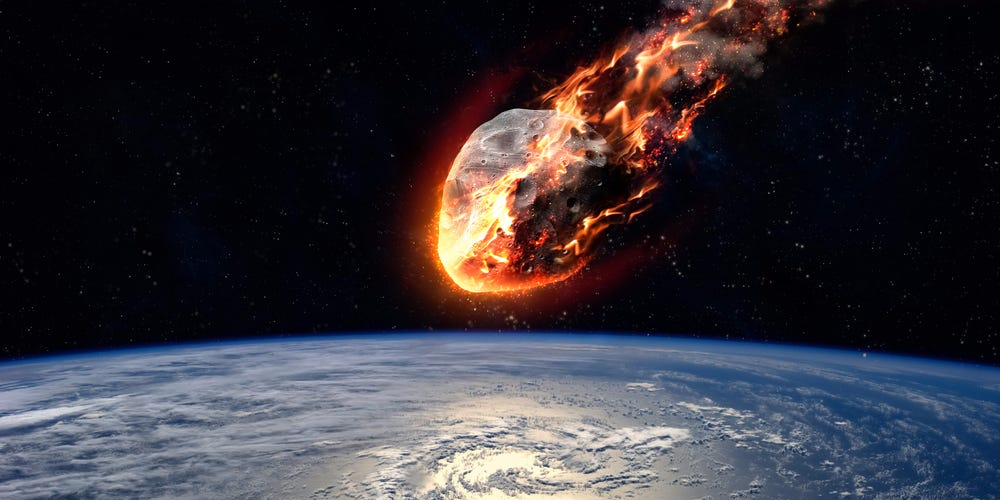
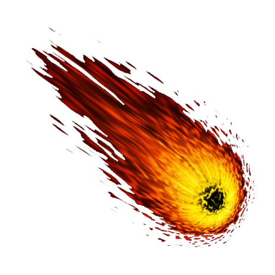

Meteoroids are what we call “space rocks” that range in size from dust grains to small asteroids. This term only applies when they’re in space. Most are pieces of other, larger bodies that have been broken or blasted off. Some come from comets, others from asteroids, and some even come from the Moon and other planets. Some meteoroids are rocky, while others are metallic, or combinations of rock and metal.
When meteoroids enter Earth’s atmosphere, or that of another planet, like Mars, at high speed and burn up, they’re called meteors. This is also when we refer to them as “shooting stars”. Sometimes meteors can even appear brighter than Venus -- that’s when we call them “fireballs.” Scientists estimate that about 48.5 tons (44,000 kilograms) of meteoritic material falls on Earth each day. When a meteoroid survives its trip through the atmosphere and hits the ground, it’s called a meteorite.
Meteor Showers
Several meteors per hour can usually be seen on any given night. When there are lots more meteors, you’re watching a meteor shower. Some meteor showers occur annually or at regular intervals as the Earth passes through the trail of dusty debris left by a comet (and, in a few cases, asteroids). Meteor showers are usually named after a star or constellation that is close to where the meteors appear to originate in the sky. Perhaps the most famous are the Perseids, which peak around August 12 every year.
Every Perseid meteor is a tiny piece of the comet Swift-Tuttle, which swings by the Sun every 135 years. Other notable meteor showers include the Leonids, associated with comet Tempel-Tuttle; the Aquarids and Orionids, linked to comet Halley, and the Taurids, associated with comet Encke. Most of this comet debris is between the size of a grain of sand and a pea and burns up in the atmosphere before reaching the ground. Sometimes, meteor dust is captured by high-altitude aircraft and analyzed in NASA laboratories.
Finding Meteorite
Most space rocks smaller than a football field will break apart in Earth’s atmosphere. Traveling at tens of thousands of miles per hour, the object disintegrates as pressure exceeds the strength of the object, resulting a bright flare. Typically less than 5 percent of the original object will ever make it down to the ground. These meteorites, pieces of meteors that are found, typically range between the size of a pebble and a fist.
Don’t expect to find meteorites after a meteor shower. Most meteor showers come from comets, whose material is quite fragile. Small comet fragments generally won’t survive entry into our atmosphere. In theory, the Taurids and Geminids could send meteorites down to our surface every once in a while, but no remnants have been traced to them definitively.
Why are Meteorites Important?
Meteorites that fall to Earth represent some of the original, diverse materials that formed planets billions of years ago. By studying meteorites we can learn about early conditions and processes in the solar system’s history. These include the age and composition of different planetary building blocks, the temperatures achieved at the surfaces and interiors of asteroids, and the degree to which materials were shocked by impacts in the past.
What do Meteorites Look Like?
Meteorites may resemble Earth rocks, but they usually have a burned exterior that can appear shiny. This “fusion crust” forms as the meteorite’s outer surface melts while passing through the atmosphere.
There are three major types of meteorites: the "irons," the "stonys," and the stony-irons. Although the majority of meteorites that fall to Earth are stony, most of the meteorites discovered long after they fall are irons. Irons are heavier and easier to distinguish from Earth rocks than stony meteorites.
Where do Meteorites Come From?
Most meteorites found on Earth come from shattered asteroids, although some come from Mars or the Moon. In theory, small pieces of Mercury or Venus could have also reached Earth, but none have been conclusively identified. Scientists can tell where meteorites originate based on several lines of evidence. They can use photographic observations of meteorite falls to calculate orbits and project their paths back to the asteroid belt. They can also compare compositional properties of meteorites to the different classes of asteroids. And they can study how old the meteorites are – up to 4.6 billion years.
Martian rocks can be traced to the Red Planet because they contain pockets of trapped gas that matches what satellites and rovers have found at Mars. Similarly, if the composition of a meteorite resembles rocks that astronauts brought back from the Moon during the Apollo mission, it is likely to be lunar, too. We know that a class of meteorites called “howardite-eucrite-diogenite” (HED) came from the planet-like world Vesta in the asteroid belt, thanks to NASA’s Dawn mission.